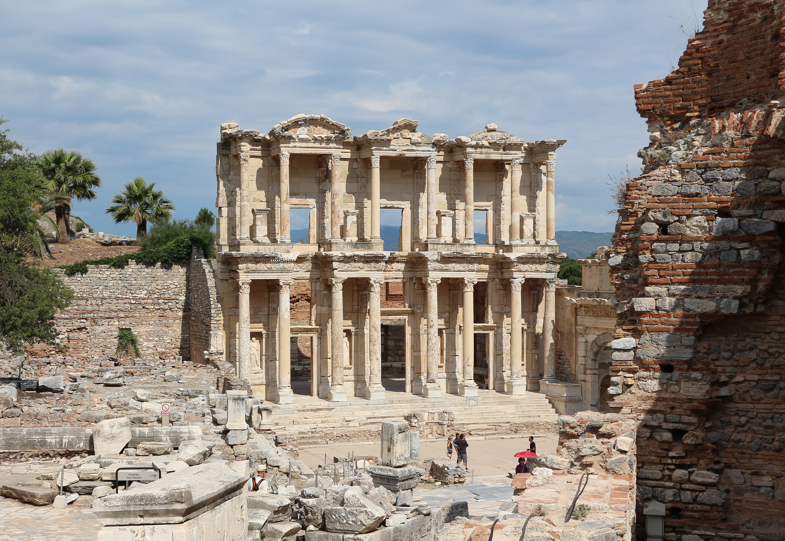

Library of Celsus

- Find Name
- Library of Celsus
- Description
- The library of Ephesus, commissioned in the AD 110s by the consul Tiberius Julius Aquila as a funerary monument for his father, the former proconsul of Asia Tiberius Julius Celsus Polemaeanus, who is buried in a sarcophagus in a crypt beneath the hall. The third-largest library of the Greco-Roman world, it held about 12,000 scrolls; its two-storey marble facade, re-erected by anastylosis in 1970-1978, is now Ephesus's most recognisable building. It postdates Paul's ministry at Ephesus by half a century and is a different building from the Ephesus Theater already in this collection.
- Historical Period
- Roman
- Evidence Class
- Contextual
- Interpretations
- The building, its patron, and its scroll capacity are well documented; the facade statues visible today are replacements, and the interior and its scrolls were destroyed by fire in AD 262. The library does not date from Paul's time and no link to any New Testament event is claimed — it illuminates the city's later book culture, not the apostolic visit.
- Alternative Names
- Celsus Library
- Related Places
- Related Books
- Related People
- Scripture Illuminated
- Biblical Significance
- Ephesus was the city of Paul's longest ministry, of the riot of the silversmiths, and of the first of the seven letters. The library shows the book-world that city inhabited: a culture of scrolls, public reading, and monumental learning, in which the burning of the magic books in Acts 19:19 — fifty thousand pieces of silver worth of scrolls — was a costly and public break with the old wisdom.
- Artifact Date
- AD 110s, completed under Hadrian; facade re-erected 1970-1978
- Current Location
- In situ, Ephesus archaeological site
- Date Discovered
- 1903
- Discovery Location
- Ephesus, near Selcuk, Turkey
- Timeline Era
- Early Church
Awaiting Review Not yet checked against scholarly sources. Treat its claims as provisional until this entry is reviewed. About verification
Last reviewed: not yet reviewed